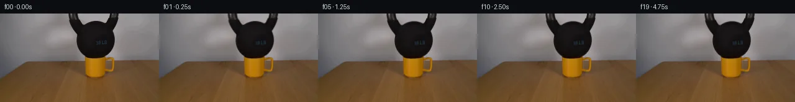

![首帧]()

Round 00
2026-11-05T19:47:21.742464+00:00像素候选变化代码 +159/−0inspection 更新
pixels 00415177447f0c6c · code b75b4c9930b74956
查看本轮 generate.py 真实 diff
--- previous/generate.py
+++ current/generate.py
@@ -0,0 +1,159 @@
+"""Local source-pixel continuation of a kettlebell resting on a ceramic mug.
+
+No image viewing, network, model inference, renderer, or reference asset is used.
+The small motion is an authored damped rigid pose, not a material simulation.
+"""
+from pathlib import Path
+import json
+import numpy as np
+from PIL import Image, ImageDraw
+from scipy.ndimage import binary_dilation, label, map_coordinates
+from artifact_io import save
+
+ROOT = Path(__file__).resolve().parent
+HEIGHT, WIDTH = 144, 256
+POSES = [(0.0, 0.0), (0.40, 0.30), (-0.16, 0.58),
+ (0.07, 0.54), (-0.025, 0.56)] + [(0.0, 0.56)] * 15
+
+
+def extract_layer(source):
+ """Recover the iron layer, including source texture and edge pixels.
+
+ Dark-pixel connectivity distinguishes the iron from gray scenery. The
+ handle opening remains open. Background interpolation is needed only for
+ fractions of a pixel uncovered along the old boundary.
+ """
+ yy, xx = np.mgrid[:HEIGHT, :WIDTH]
+ r, g, b = source.transpose(2, 0, 1)
+ candidate = ((r < 120) & (g < 110) & (b < 110)
+ & (xx >= 108) & (xx <= 193) & (yy <= 72))
+ candidate &= (yy < 67) | (xx >= 132)
+ labels, count = label(candidate)
+ sizes = np.bincount(labels.ravel())
+ sizes[0] = 0
+ core = labels == np.argmax(sizes)
+ support = binary_dilation(core, iterations=1)
+ support &= (yy <= 72) & (xx >= 108) & (xx <= 193)
+ background = source.astype(np.float64).copy()
+ # Independent linear interpolation in each scanline, using original
+ # neighboring RGB samples. Splits the two handle arms at the real opening.
+ for y in range(73):
+ hidden = np.flatnonzero(support[y])
+ visible = np.flatnonzero(~support[y])
+ for c in range(3):
+ background[y, hidden, c] = np.interp(
+ hidden, visible, source[y, visible, c])
+ residual = np.zeros_like(background)
+ residual[support] = source[support] - background[support]
+ return residual, support
+
+
+def move_layer(layer, angle_degrees, descent):
+ yy, xx = np.mgrid[:HEIGHT, :WIDTH].astype(np.float64)
+ angle = np.deg2rad(angle_degrees)
+ cs, sn = np.cos(angle), np.sin(angle)
+ # Rotation about the contact point, followed by a subpixel downward seat.
+ px, py = 152.0, 71.0
+ dx, dy = xx - px, yy - py - descent
+ srcx = px + cs * dx + sn * dy
+ srcy = py - sn * dx + cs * dy
+ # Nearest edge extension retains the already cropped top of the handle.
+ return np.stack([map_coordinates(layer[:, :, c], [srcy, srcx],
+ order=1, mode='nearest', prefilter=False)
+ for c in range(3)], axis=2)
+
+
+def render(source, residual, angle, descent):
+ result = source.astype(np.float64) - residual
+ result += move_layer(residual, angle, descent)
+ yy, xx = np.mgrid[:HEIGHT, :WIDTH]
+ # Existing yellow rim gains a small contact shade as the load seats.
+ yellow = ((source[:, :, 0] > 120) & (source[:, :, 1] > 70)
+ & (source[:, :, 2] < 40))
+ rim = yellow & (yy >= 73) & (yy <= 75) & (xx >= 140) & (xx <= 167)
+ strength = (descent / 0.56) * 0.025
+ shade = strength * np.exp(-((xx - 153.0) / 11.0) ** 2
+ - ((yy - 72.5) / 1.15) ** 2) * rim
+ result *= 1.0 - shade[:, :, None]
+ return np.clip(np.rint(result), 0, 255).astype(np.uint8)
+
+
+def transition_sheet(frames):
+ pairs = [(0, 1), (1, 2), (2, 3), (4, 5), (5, 6), (18, 19)]
+ sheet = Image.new('RGB', (768, len(pairs) * 167), (25, 28, 35))
+ draw = ImageDraw.Draw(sheet)
+ for row, (a, b) in enumerate(pairs):
+ y = row * 167
+ delta = np.abs(frames[b].astype(np.int16) - frames[a].astype(np.int16))
… diff truncated; 72 more lines …